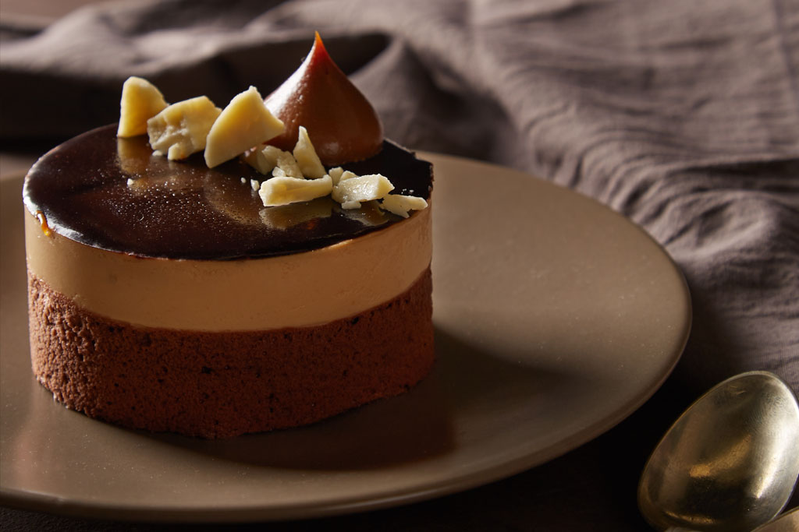
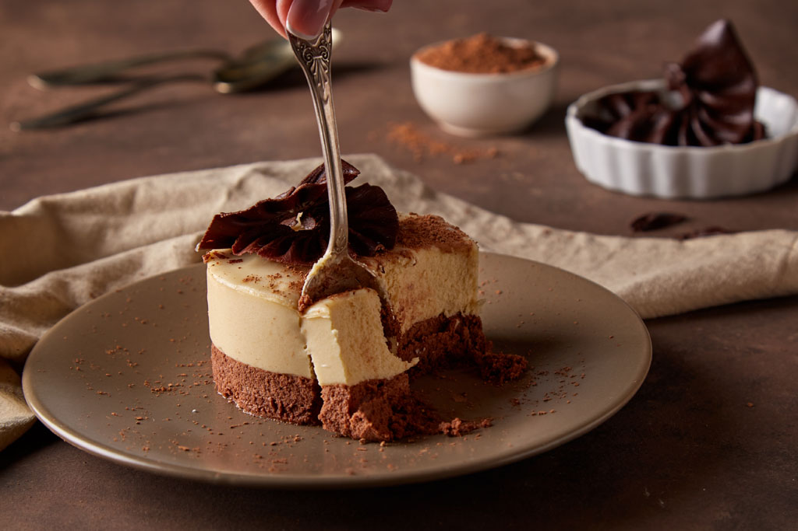

¿Por qué elegir pasteleria artesanal?
El dulce es uno de los cinco sabores básicos y de los pocos que es aceptado de manera global por todas las culturas como uno de los sabores más placenteros. Son alimentos que pueden incluirse en una dieta saludable, sin abusar de ello, como con el resto de alimentos. Pero debemos distinguir entre pastelería artesana y la industrial.
¡Hay grandes diferencias entre un dulce artesano y uno industrial!
En Cam Bakery seguimos apostando por la elaboración artesana, porque amamos la pastelería tradicional aunque siempre innovando, creando nuevas recetas, buscando sabores, texturas y apariencias que seduzcan.

Algunas las diferencias entre ellas.
- La pastelería artesana se elabora con ingredientes habituales de nuestra dieta, como la mantequilla, huevos, azúcar, aceite, harina, etc. Cuyas ventajas nutricionales son indiscutibles. En cambio la pastelería industrial lleva ingredientes con gran valor calórico, por lo que es mejor consumir este tipo de manera muy moderada, en cambio la artesal puede comerse de manera más habitual, ya que es natural, más sano, sin grasas saturadas.
- El proceso de elaboración en la pastelería artesana emplea poca maquinaria industrial, donde el artesano es el que maneja todo el proceso con productos naturales. Sin embargo, la industrial no sería posible sin maquinaria, y sin productos que se puedan trabajar con éstas, además de utilizar añadidos aditivos y conservantes.
- La elaboración del pan artesanal se basa principalmente en una buena masa madre, en cambio el método industrial lo sustituye por emulgentes potentes e indigestos, conservantes, potenciadores del sabor artificial.
- La duración entre ellas es diferente, mientras la industrial está elaborada para durar mucho más tiempo, la artesanal dura menos, ya que está creada por productos de calidad y con una elaboración mucho más cuidada, para crear productos de calidad.